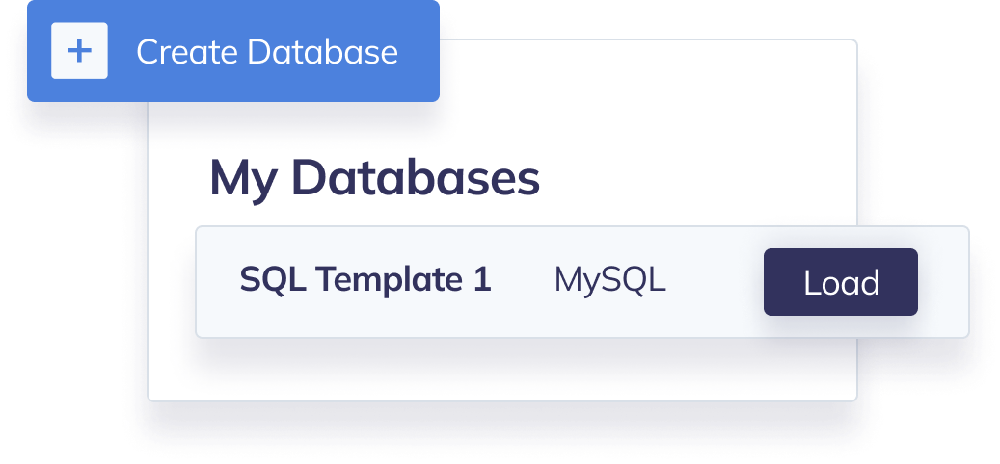

Save and load database templates
Create a library of SQL problems to standardise your interview process. Load your templates during the interview for a seamless experience.

Create a library of SQL problems to standardise your interview process. Load your templates during the interview for a seamless experience.
Evaluate full-stack engineers on a range of skills by switching from SQL to other popular languages mid-interview.
You can start an interview with a unique link directly from a template or load saved questions during an existing interview.
Brief candidates, talk about their solutions and explain concepts as you would in a Zoom call.
Copy and share the interview URL in advance or invite candidates via email once you start.
Use a virtual whiteboard to illustrate problems and solutions when briefing candidates and reviewing their work.
Go back in time and instantly replay any past interview. CodeInterview records every keystroke including code output.
Use an intuitive online code editor to compile and run code in real-time.

Take notes as you interview the candidate so you can review and compare later. These are only available to you and your team.
“CodeInterview has been the 10x our hiring process needed.”
 Justin Kathan,
Co-founder of Joist
Justin Kathan,
Co-founder of Joist
No credit card required, get started with a free trial or choose one of our premium plans for hiring at scale.